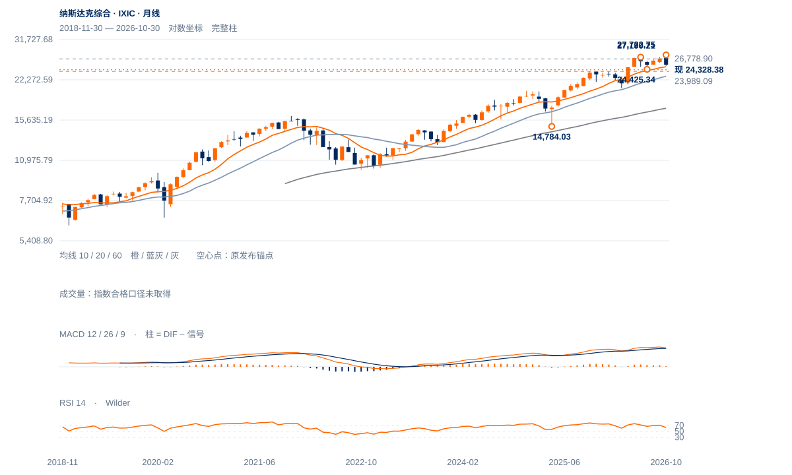

近期偏超跌反抽，2—6周先看22982恢复，再看24262—24425旧低区，原26048.83两日不变。
纳斯达克综合 · 2026-11-20完整收盘
22618跌破22982月均衡后，回收要跨过哪些供应？
22,617.73-5.28%
年中低谷下破扩展
分期限展望
未来2—6周先检验22982恢复，再处理24262—24425旧低区。18日盘中回收已被后续否定，25673—26053缺口供应未恢复以前，反弹仍按修复处理。
未来1—3个月的关键是年中谷失守能否成为失败下破。若周收不能重新站回24425并抬高谷，较大科技调整仍占优；恢复26049两日过滤才是更高一级改善。

长期背景
长期大谷仍抬升，但11月已跌穿7月24425谷，近端结构受损。长期均衡未能替代旧下缺口25673—26053的实际回收。完整10月均衡和历史水平只提供背景，当前价格需要由后续确认检验。 当前日收盘22,617.73与已完成月线背景分开判断；11月仍未结束，不提前计为完整月级反转。
中期结构与新证据
完整周线已更新至11月20日：2026-08-24低25,910.82（2026-09-11确认）；2026-09-16低25,802.96（2026-10-02确认）；2026-10-06高27,722.75（2026-10-23确认）。最新一周与上次11月13日背景分别保存；23日仅为本周进行中观察。18日盘中回收24262曾提供反证，但19—20日继续下移，20日22617.73已低于24262旧低及22982长期均衡参照。24425年中谷和25673—26053缺口均在上方，早期拒跌没有形成有效中期恢复。
确认与失效
22982与24262—24425分级回收，不按反弹幅度计已确认。
18日回收后的失败原样保留；无合格指数量，不据成交量宣称吸收。
主要反方
急跌后的反弹可能较大，若连续收回年中谷并抬高周谷，下降扩展需下调。
波动与量能
RSI14 25.55；ATR14 626.13；相对量未取得合格口径